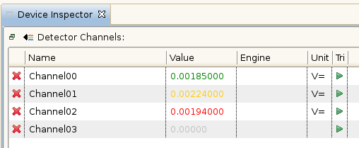
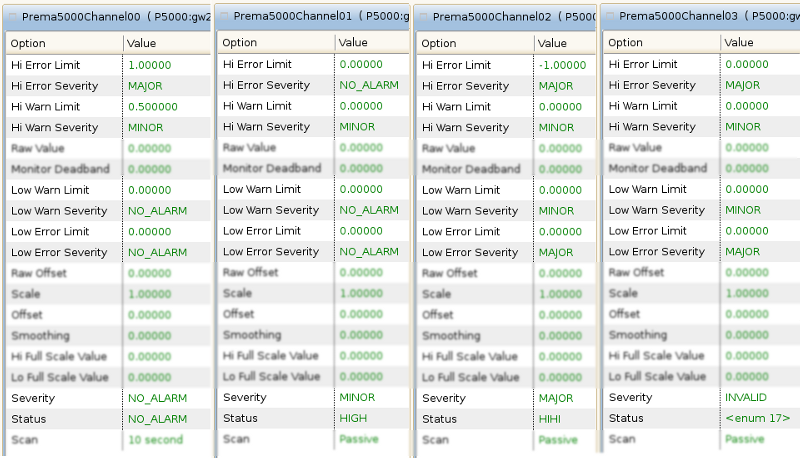

The table below shows the colors used in the tables of the Device Inspector View.
| Color | Boundary | Severity |
|---|---|---|
| gray | value undefined | INVALID |
| red | value > .HIHI || value < .LOLO | MAJOR |
| yellow | value > .HIGH || value < .LOW | MINOR |
| green | none of above conditions is true | NO_ALARM |
Below is a captured state of measured values of a detector with four channels:

Respective to that state are the following options of the four channels:
